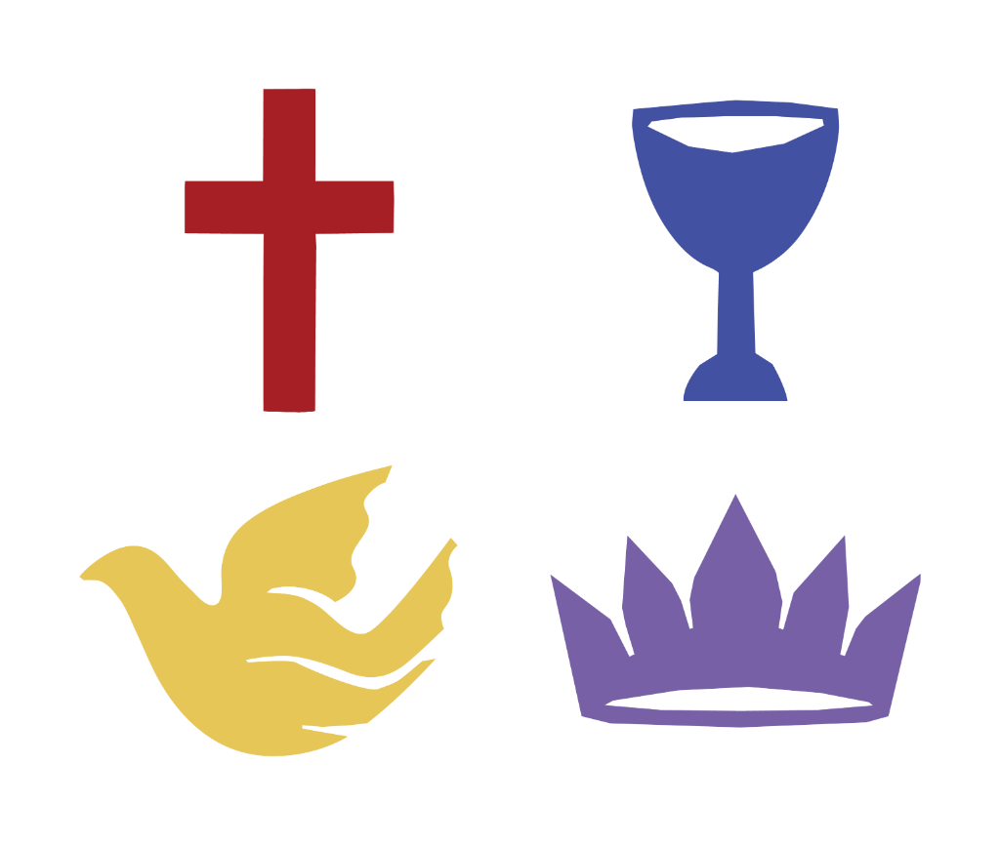

FOURSQUARE GOSPEL CHURCH IN NIGERIA
MINISTERIAL CV
Rev. Ifedayo Lawal
Senior Pastor • Foursquare Gospel Church Yaba
Phone: +234 800 000 0000
|
Email: ifedayo@example.com
|
DOB: 1980-01-01
Address: 123 Foursquare Avenue, Lagos, Nigeria
Address: 123 Foursquare Avenue, Lagos, Nigeria
CURRICULUM VITAE
No: 10934
Ministerial Status & Credentials
| Ecclesiastical Status: | Ordained | Year Inducted: | 2005 |
| Year Licensed: | 2008 | Year Ordained: | 2012 |
Ministerial Jurisdiction & Appointment
| Primary Designation: | Senior Pastor |
| Local Church / Station: | Foursquare Gospel Church Yaba |
| District Jurisdiction: | Yaba District |
| Zonal Jurisdiction: | Lagos Mainland Zone |
| Other Appointments: | National Youth Director |
Academic Qualifications
| Level | Institution | Year | Certificate / Degree |
|---|---|---|---|
| Professional | ICAN, PMP | ||
| Tertiary | University of Lagos | 2002 | B.Sc Computer Science |
| Secondary | King's College Lagos | 1997 | SSCE |
| Primary | Grace Children School | 1991 | FSLC |
Theological Education & Training
| Seminary / Bible College: | LIFE Theological Seminary |
| Year / Period: | 2006-2008 |
| Qualifications Obtained: | Diploma in Theology |
| Attached Certificates: |
References: Available upon request.
Generated 24 July 2026